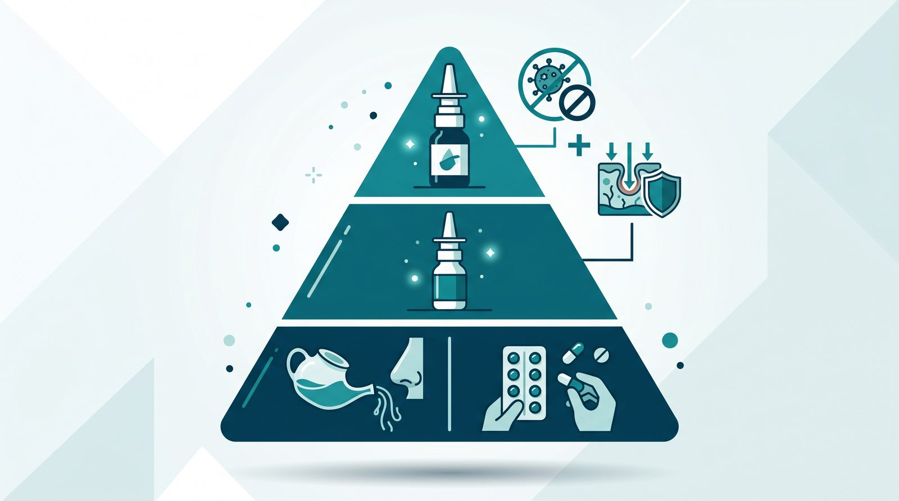

Key Takeaways
- The ARIA-EAACI 2024-2025 guidelines suggest a combination intranasal antihistamine + corticosteroid (INAH+INCS) spray over either spray alone. This is a conditional recommendation, supported by moderate certainty evidence for seasonal allergic rhinitis.[1]
- Part II of the same guidelines, on oral and eye treatments, recommends an intranasal corticosteroid over an oral antihistamine (a strong recommendation) and second-generation over first-generation oral antihistamines.[2]
- Among individual intranasal medicines, azelastine-fluticasone, fluticasone furoate and fluticasone propionate had the highest probability of moderate or large symptom improvements in seasonal allergic rhinitis in a 2024 meta-analysis.[3]
- The freeze-free growing season in 198 US cities lengthened by 21 days on average from 1970 to 2025,[4] and North American pollen seasons lengthened by about 20 days from 1990 to 2018.[5]
- In a German prescription-database study of grass pollen sublingual immunotherapy tablets, the risk of new asthma was about 30% lower during treatment and about 40% lower after it than in people who did not receive immunotherapy. The study was observational.[6]
- The guidelines suggest against using intranasal decongestants for longer than 5 days, and against adding one to a corticosteroid spray, because the combination added no efficacy and carried more adverse events.[1]
Why This Matters Right Now
If your seasonal allergies have felt worse in recent years, you are not imagining it. North American pollen seasons started earlier and lasted longer from 1990 to 2018, and pollen concentrations rose over the same period.[5]
About 1 in 4 US adults (25.2%) and about 1 in 5 children (20.6%) had a diagnosed seasonal allergy in 2024.[7][8]
The Allergic Rhinitis and its Impact on Asthma (ARIA) group first published its guidelines in 2001, with revisions in 2008, 2010, 2016 and 2020.[1] Its newest revision, ARIA 2024-2025, is endorsed by the European Academy of Allergy and Clinical Immunology (EAACI) and has been published in the journal Allergy as Part I on intranasal treatments (PubMed date December 2025)[1] and Part II on oral and eye treatments (March 2026).[2] The practical shifts: a suggested combination spray when one medicine is unlikely to be enough, preferences among individual nasal sprays, a firmer line in favor of nasal steroid sprays over oral antihistamines, and caution about decongestant sprays and montelukast.
The Climate Reality Behind Worsening Symptoms
Allergy treatment has to keep up with the allergens themselves, and US allergen exposure has shifted measurably.
Climate Central's 2026 analysis found that the freeze-free growing season lengthened in 173 of the 198 US cities it analyzed, by 21 days on average from 1970 to 2025.[4] The Northwest gained 31 days, the Southwest 22, the Southeast 19 and the Northeast 17.[4] The growing season is not the same as the pollen season, but pollen seasons have moved in the same direction: across 60 North American stations, pollen seasons lengthened by about 20 days and pollen concentrations rose 21% from 1990 to 2018.[5] A 2022 modeling study projected that total US pollen emissions could rise 16% to 40% by the end of the century with warmer temperatures, and up to 200% if rising carbon dioxide doubles pollen production.[9]
A 2025 scoping review in The Laryngoscope covering 30 studies found 16 reporting longer pollen seasons or higher pollen concentrations related to climate change, and 4 reporting an increase in allergic rhinitis-related healthcare use.[10] The practical takeaway: many allergic people now face more days of symptoms each year, so it is worth planning treatment for a longer season.
What's New in the ARIA-EAACI 2024-2025 Guidelines
The new guidelines were developed using the GRADE evidence-to-decision framework. Each recommendation is labeled strong ("we recommend") or conditional ("we suggest"), with a rating of the certainty of evidence.[1]
Combination INAH+INCS sprays are suggested over a single spray
For people with allergic rhinitis, the guidelines suggest a fixed combination of an intranasal antihistamine and corticosteroid over an INCS alone, and over an intranasal antihistamine alone. Both are conditional recommendations, based on moderate certainty evidence for seasonal allergic rhinitis and very low certainty for year-round (perennial) rhinitis.[1] The panel describes this as a change from ARIA 2016, particularly for people with more severe symptoms.[1] Where one medicine is unlikely to bring a significant improvement, it recommends the combination over no treatment (strong recommendation).[1] Combination sprays had a faster onset and, in mobile health (mHealth) data, higher treatment satisfaction, but they cost more than an INCS in 34 of 36 countries surveyed.[1] Among combinations, the guidelines suggest azelastine-fluticasone over olopatadine-mometasone for adults (conditional).[1]
INCS still beats oral antihistamines for nasal symptoms
Part II recommends using an intranasal corticosteroid over an oral antihistamine (strong recommendation, moderate certainty evidence).[2] A 2017 meta-analysis found INCS superior to oral antihistamines for total nasal symptoms, stuffiness and quality of life.[11] The same part recommends oral antihistamines over leukotriene receptor antagonists such as montelukast (strong), and suggests against adding montelukast to an oral antihistamine, citing rare but important neuropsychiatric safety concerns.[2] The US label for Singulair (montelukast) carries a boxed warning for serious neuropsychiatric events and says that for allergic rhinitis it should be reserved for people who have an inadequate response or intolerance to alternative therapies.[12]
Specific INCS preferences emerge
A 2024 meta-analysis of 151 primary studies, published in the Journal of Allergy and Clinical Immunology, found azelastine-fluticasone, fluticasone furoate and fluticasone propionate to be the medicines with the highest probability of producing moderate or large improvements in total nasal symptom scores and quality of life for seasonal allergic rhinitis. Most included studies had unclear or high risk of bias.[3] The ARIA guidelines now suggest fluticasone furoate or fluticasone propionate for adults over beclomethasone, budesonide, ciclesonide, mometasone and triamcinolone. This is a conditional recommendation based on low or very low certainty evidence, and the panel found the individual INCS had similar safety.[1]
A recommendation against routine intranasal decongestants
The guidelines suggest against adding an intranasal decongestant to an INCS: doing so did not increase efficacy but was associated with a higher risk of adverse events. They also suggest against using intranasal decongestants for longer than 5 days in adolescents and adults. Both are conditional recommendations based on very low certainty evidence, and the panel allows short-term use in some situations while an INCS is being started.[1] The Afrin (oxymetazoline) label says not to use it for more than 3 days and warns that frequent or prolonged use may cause nasal congestion to recur or worsen.[13]

Why Intranasal Beats Oral for Most Symptoms
A 2017 meta-analysis pooled five randomized trials and 990 patients comparing intranasal corticosteroids with oral antihistamines.[11] INCS were superior for total nasal symptoms (standardized mean difference -0.70), nasal obstruction (-0.56) and quality of life (mean difference -0.90). The difference for runny nose (-0.47) did not reach statistical significance.[11]
One area where the comparison was even: eye symptoms. For itchy, watery eyes, oral antihistamines and intranasal corticosteroids performed similarly.[11] Second-generation oral antihistamines remain an option. ARIA describes loratadine and fexofenadine as non-sedating and cetirizine as affordable but sedating, and suggests choosing among them based on preferences about efficacy and safety, availability and cost.[2]
| Treatment Approach | ARIA-EAACI 2024-2025 Position | Evidence Level | Key Notes |
|---|---|---|---|
| Combination INAH+INCS spray (e.g., azelastine-fluticasone) | Suggested over INCS alone or INAH alone | Conditional rec, moderate CoE for seasonal AR[1] | Faster onset; higher satisfaction in mHealth data; usually costs more[1] |
| Intranasal corticosteroid alone (fluticasone furoate or propionate suggested) | Recommended over no treatment and over oral antihistamines | Strong rec, moderate CoE[1][2] | Choice of fluticasone is conditional, low to very low CoE[1] |
| Intranasal antihistamine alone (azelastine) | Recommended over no treatment; INCS suggested over it | Strong rec, moderate CoE (vs no treatment)[1] | Faster onset than INCS; similar efficacy and safety; INCS typically cost less and have higher adherence[1] |
| Oral second-generation antihistamine | Recommended over no treatment and over montelukast; preferred over first-generation | Strong rec, moderate CoE (vs no treatment)[2] | Less effective than INCS for nasal symptoms; similar for eye symptoms[11] |
| Saline nasal irrigation | Not addressed in ARIA Parts I and II | 2020 meta-analysis: improved symptoms[14] | Safe add-on to medicine in adults;[14] use distilled, sterile, or boiled and cooled water[15] |
| Sublingual immunotherapy (SLIT) | Not addressed in ARIA Parts I and II | Placebo-controlled trials;[16] observational asthma data[6] | Tablets carry a boxed warning for severe allergic reactions[17] |
| Intranasal decongestants (long-term) | Suggested against beyond 5 days and as an add-on to INCS | Conditional rec, very low CoE[1] | No added efficacy with INCS; more adverse events[1] |
The Long Game: Sublingual Immunotherapy
Parts I and II of ARIA-EAACI 2024-2025 cover intranasal, oral and eye medicines; neither makes a recommendation on immunotherapy.[1][2] Sublingual immunotherapy (SLIT) uses tablets or liquid drops placed under the tongue to treat the allergy itself. A 2025 review describes allergy immunotherapy as a proven treatment for allergic rhinitis and asthma with the potential to modify the natural history of these disorders, and notes that SLIT has efficacy close to allergy shots with a better safety profile that allows self-administration.[18]
A German prescription-database study compared 2,851 people treated with grass pollen SLIT tablets with 71,275 people who received symptom medicines only. After treatment stopped, allergic rhinitis medication use was 18.8 percentage points lower in the SLIT group, and the relative risk of new asthma was about 30% lower during treatment and about 40% lower during follow-up.[6] Because the study was observational and relied on prescription records, it shows an association rather than proof of prevention. A 2025 meta-analysis of one manufacturer's liquid SLIT product (25 randomized trials, 1,830 patients) found it reduced symptom and medication scores compared with placebo, with consistent results for grass, dust mite, tree and weed allergens. Two of its authors work for that manufacturer.[16]
In the US, Grastek (timothy grass) and Ragwitek (short ragweed) are SLIT tablets for pollen allergy confirmed by a positive skin test or lab (in vitro) test for pollen-specific IgE antibodies, approved for people 5 through 65 years of age. Treatment starts at least 12 weeks before the expected pollen season, and the first dose is given in a healthcare setting under a physician's supervision.[17][19] Both labels carry a boxed warning that the tablets can cause life-threatening allergic reactions such as anaphylaxis; the Grastek label also calls for a prescription for auto-injectable epinephrine.[17][19]
Thunderstorm Asthma: A New Concern
A study presented at the 2025 American College of Allergy, Asthma and Immunology meeting analyzed 4,439 asthma emergency department visits at three Wichita, Kansas hospitals from 2020 to 2024. About 14% of those visits fell on 38 thunderstorm days, only 2% of the calendar days in the study period. Storm days averaged nearly 18 asthma visits, compared with about 3 on other days.[20]
The proposed mechanism: during thunderstorms, high humidity and strong air currents can make pollen grains absorb water and burst into fragments smaller than 2.5 micrometers, which can reach the small airways.[21] ACAAI notes that, according to the World Allergy Organization, thunderstorms are considered a risk factor for asthma attacks in people with pollen allergy.[20]
If you have seasonal allergies and any history of asthma symptoms, the ACAAI release advises including storm-specific precautions in your asthma action plan.[20]
What This Means for You
Translating new guidelines into real treatment decisions takes a few practical steps.
If you have moderate to severe seasonal symptoms: the guidelines suggest a combination intranasal antihistamine + corticosteroid spray over a single spray, particularly when symptoms are more severe. Combination sprays have a faster onset, and were linked to higher treatment satisfaction in mHealth data.[1]
If you've been on a single nasal spray and it's not enough: a combination spray is the option the guidelines suggest over an INCS alone, though it usually costs more.[1] Talk to your physician about whether switching makes sense for you.
If you're using a decongestant nasal spray long-term: the guidelines suggest against use beyond 5 days,[1] and the Afrin label says not to use it for more than 3 days and warns that frequent or prolonged use may cause congestion to recur or worsen.[13] A physician can help you plan how to stop.
If your symptoms are persistent and confirmed by allergy testing: ask whether sublingual immunotherapy makes sense for you. Immunotherapy has the potential to change the natural course of allergic rhinitis.[18]
Start earlier in the season: most allergy medications for hay fever work best if started before tree pollen is in the air.[22]
Telehealth visits work well for allergy management. You can review symptoms, optimize your current regimen, discuss SLIT eligibility, and get prescriptions adjusted without a trip to the office. If you'd like a structured review of your current allergy plan against the new guidelines, a virtual visit is a practical place to start.
How to cite this guide
Bhavsar P. Seasonal Allergy Guidelines 2026: What's Changed and What It Means for You. TeleDirectMD Health Guides. Last reviewed April 27, 2026. https://teledirectmd.com/health-guides/seasonal-allergy-guidelines-2026/
References
- Sousa-Pinto B, Bousquet J, Vieira RJ, et al. Allergic Rhinitis and Its Impact on Asthma (ARIA)-EAACI Guidelines-2024-2025 Revision: Part I-Guidelines on Intranasal Treatments. Allergy. 2025;81(4):954-976. doi:10.1111/all.70131. pubmed.ncbi.nlm.nih.gov
- Vieira RJ, Sousa-Pinto B, Bousquet J, et al. Allergic Rhinitis and Its Impact on Asthma (ARIA)-EAACI Guidelines-2024-2025 Revision: Part II-Guidelines on Oral and Ocular Treatments. Allergy. 2026;81(6):1947-1970. doi:10.1111/all.70305. pubmed.ncbi.nlm.nih.gov
- Sousa-Pinto B, Vieira RJ, Brozek J, et al. Intranasal antihistamines and corticosteroids in allergic rhinitis: A systematic review and meta-analysis. J Allergy Clin Immunol. 2024;154(2):340-354. doi:10.1016/j.jaci.2024.04.016. pubmed.ncbi.nlm.nih.gov
- Climate Central. Warmer Growing Season, Longer Allergy Season. March 4, 2026. Accessed November 15, 2026. climatecentral.org
- Anderegg WRL, Abatzoglou JT, Anderegg LDL, et al. Anthropogenic climate change is worsening North American pollen seasons. Proc Natl Acad Sci U S A. 2021;118(7):e2013284118. doi:10.1073/pnas.2013284118. pubmed.ncbi.nlm.nih.gov
- Zielen S, Devillier P, Heinrich J, Richter H, Wahn U. Sublingual immunotherapy provides long-term relief in allergic rhinitis and reduces the risk of asthma: A retrospective, real-world database analysis. Allergy. 2017;73(1):165-177. doi:10.1111/all.13213. pubmed.ncbi.nlm.nih.gov
- National Center for Health Statistics. Diagnosed Allergic Conditions in Adults: United States, 2024. NCHS Data Brief No. 545. January 2026. Accessed November 15, 2026. cdc.gov
- National Center for Health Statistics. Diagnosed Allergic Conditions in Children Ages 0-17: United States, 2024. NCHS Data Brief No. 546. January 8, 2026. Accessed November 15, 2026. cdc.gov
- Zhang Y, Steiner AL. Projected climate-driven changes in pollen emission season length and magnitude over the continental United States. Nat Commun. 2022;13(1):1234. doi:10.1038/s41467-022-28764-0. pubmed.ncbi.nlm.nih.gov
- Pershad AR, Krishnan R, Lee E, et al. How Climate Change Is Impacting Allergic Rhinitis: A Scoping Review. Laryngoscope. 2025;135(8):2670-2682. doi:10.1002/lary.32124. pubmed.ncbi.nlm.nih.gov
- Juel-Berg N, Darling P, Bolvig J, et al. Intranasal corticosteroids compared with oral antihistamines in allergic rhinitis: A systematic review and meta-analysis. Am J Rhinol Allergy. 2017;31(1):19-28. doi:10.2500/ajra.2016.30.4397. pubmed.ncbi.nlm.nih.gov
- Organon LLC. SINGULAIR (montelukast sodium) tablets, chewable tablets and oral granules: Prescribing Information, including Boxed Warning. Revised 6/2021. DailyMed, U.S. National Library of Medicine. Updated April 30, 2025. Accessed November 15, 2026. dailymed.nlm.nih.gov
- Bayer HealthCare LLC. AFRIN ORIGINAL (oxymetazoline hydrochloride) spray: Drug Facts. DailyMed, U.S. National Library of Medicine. Updated December 4, 2025. Accessed November 15, 2026. dailymed.nlm.nih.gov
- Wang Y, Jin L, Liu SX, et al. Role of nasal saline irrigation in the treatment of allergic rhinitis in children and adults: A systematic analysis. Allergol Immunopathol (Madr). 2020;48(4):360-367. doi:10.1016/j.aller.2020.01.002. pubmed.ncbi.nlm.nih.gov
- U.S. Food and Drug Administration. Is Rinsing Your Sinuses With Neti Pots Safe? Content current as of April 28, 2025. Accessed November 15, 2026. fda.gov
- Di Bona D, Di Biase A, Paoletti G, et al. Efficacy of index of reactivity-liquid sublingual immunotherapy in allergic rhinoconjunctivitis: a systematic review and meta-analysis of randomized studies. Front Allergy. 2025;6:1597003. doi:10.3389/falgy.2025.1597003. Correction published 2025 (doi:10.3389/falgy.2025.1652198). pubmed.ncbi.nlm.nih.gov
- ALK-Abello A/S. GRASTEK (timothy grass pollen allergen extract) tablet: Prescribing Information, including Boxed Warning. Revised 9/2022. DailyMed, U.S. National Library of Medicine. Updated September 19, 2022. Accessed November 15, 2026. dailymed.nlm.nih.gov
- Bernstein DI. Aeroallergen immunotherapy update: Developments since the third Practice Parameter. Allergy Asthma Proc. 2025;46(6):450-454. doi:10.2500/aap.2025.46.250067. pubmed.ncbi.nlm.nih.gov
- ALK-Abello A/S. RAGWITEK (short ragweed pollen allergen extract) tablet: Prescribing Information, including Boxed Warning. Revised 9/2022. DailyMed, U.S. National Library of Medicine. Updated September 19, 2022. Accessed November 15, 2026. dailymed.nlm.nih.gov
- American College of Allergy, Asthma and Immunology. Thunderstorms linked to surge in asthma ER visits, new study shows. November 6, 2025. Accessed November 15, 2026. acaai.org
- Xiao Z, Shi Y, Zhao D, Wang Y, Gu Y. Triggering mechanisms of acute thunderstorm asthma: epithelial barrier disruption and immune dysregulation. Respir Res. 2026;27(1). doi:10.1186/s12931-026-03532-6. pubmed.ncbi.nlm.nih.gov
- American Academy of Allergy, Asthma and Immunology. Hay Fever (Rhinitis): Symptoms, Diagnosis, Management and Treatment. Page dated 7/16/2026. Accessed November 15, 2026. aaaai.org